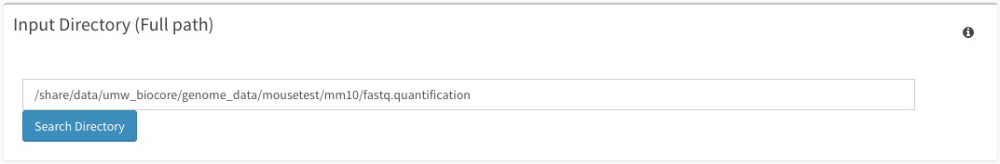
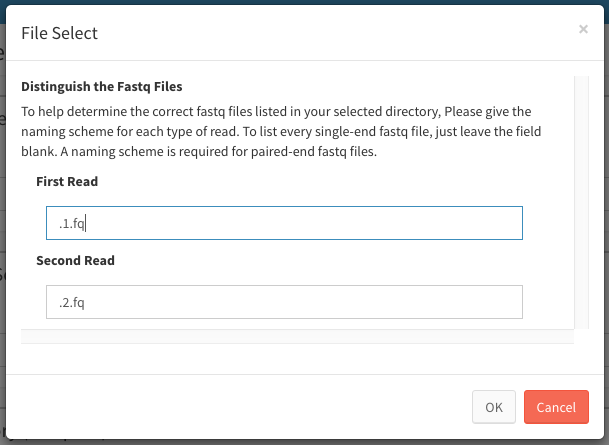
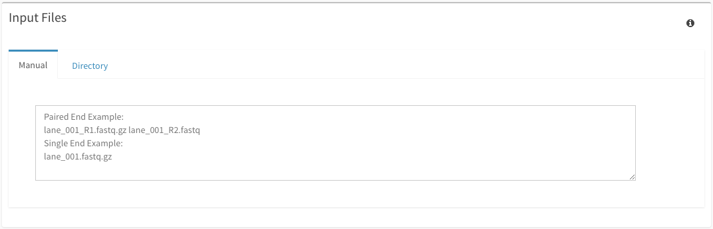
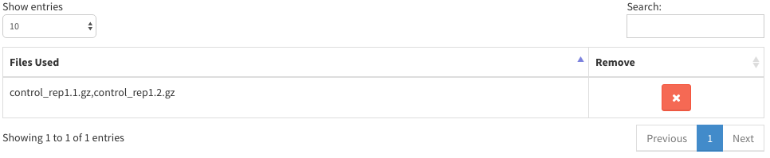
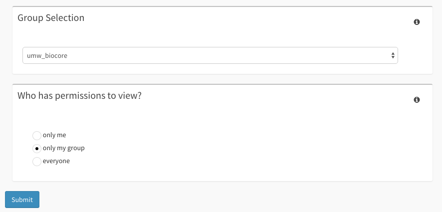

Fastlane Guide¶
This guide will walk you through all of your options within the Fastlane page.
Getting Started¶
First, make sure to have an instance of dolphin available (see Dolphin Docker) as well as an account for the dolphin interface.
Once logged in, click on the ‘NGS Tracking’ tab on the left, then click on ‘Fastlane’.

Fastlane Input¶
Once you’ve successfully made it to the Fastlane page, you can start to fill out your submission.
Down the list, from top to bottom and from left to right, the sections are as follows.
Genome Build:
Select one of the genome builds from the corresponding dropdown menu. As more genomes become available, updates will introduce more selection options.
Barcode Separation:
Select whether or not your samples need their barcodes separated or not. Upon selecting yes, 3 new sections to be filled out become visable: Barcode Definitions, Barcode Distance Options, and Barcode Format Options.

Mate-paired:
Select whether or not the samples are mate-paired or not.
Barcode Definitions:
This section will appear only if Barcode Separation is selected. This part of the form will ask you for the sample name of each sample, followed by a space and then the barcode.
IE:
Library1 ATCGATCG
AnotherLibrary GGCCTTAA
LastLibrary GCGCGTAC
Samples are to be separated by a new line. An example is shown in light grey within the box of how the sample submission should look.
Barcode Distance Options:
This section will appear only if Barcode Separation is selected. Selection of the barcode distance metric can be selected from the dropdown menu found in this section.
Barcode Format Options:
This section will appear only if Barcode Separation is selected. The dropdown menu within this section will select the whereabouts of the barcode within the reads.
Experiment Series Name:
This section will determine the name of the experiment series. If adding to an already created experiment series, please be sure to input the exact name of the experiment series to add to.
Import Name:
This section will determine the name of the import. If adding to an already created import, please be sure to input the exact name of the import to add to.
Input Directory:
This section will list the exact location of all of the fastq files within the cluster. If files are not all within the same directory, it’s advised to either switch to importing via the Excel Import section or to move the files to a unified location. The full path of the directory must be given.
Additionally, you can search this directory on the cluster for your files. Click on the ‘Search Directory’ button to bring up a modal which will instruct you to search for your fastq files based on your reads. You will be asked for either all reads or read 1 and read 2 based on your Mate-Paired selection.
Input Files:
This section is where you will put sample and file information. This information includes sample names and fastq file names. The input of this section will change based on your previous selections within the form. First, the input for files will be in the manual format.
Upon searching your input directory for files, the directory tab will be selected and filled with your appropriate search terms.

From here you can select one or multiple files to create a sample with. Samples are stored in a table under the ‘Read Files’ list and can be removed from your selection at any time by clicking the red ‘X’. The ‘Add Selection’ button will add whatever files you have highlighted as one sample. The ‘Add All’ button will attempt to correctly add samples based on your previous searched selection. The ‘Reset’ button will reset both the Read Files and the selected table back to your original search. Lastly, the ‘Adv Regex Select’ will attempt to find all of the files with the select search term and pair them to one sample.
You can also change the sample names within the table at any time by selecting the text box and altering the text. It is important to note that if you have selected to carry out barcode seperation, that the sample names will be given in the ‘Barcode Definitions’ section. Thusly, if Barcode Separation is selected, the table will only show the files being used.
If using the manual entry for the samples and files, you can follow these guidelines for input:
No barcode separation, mate-paired:
- If your samples do not require barcode separation and are mate-paired, the input for each sample will be the sample name, first paired-end fastq file, and then the second paired-end fastq file.
- Example: sample_name_1 samplename_1_R1.fastq.gz samplename_1_R2.fastq.gz
No barcode separation, not mate-paired:
- If your samples do not require barcode separation and are not mate-paired, the input for each sample will be the sample name and then the fastq file.
- Example: sample_name_1 samplename_1.fastq.gz
Barcode separation required, mate-paired:
- If your samples require barcode separation and are mate-paired, the input for each sample will be the first paired-end fastq file followed by the second paired-end fastq file.
- Keep in mind that the files must coordinate with with the samples listed in the barcode definitions tab. Thus make sure your files and samples match each line of the two tabs.
- The first sample listed in the Barcode Definitions tab will be the first set of files listed in the Input Files tab.
- Example: samplename_1_R1.fastq.gz samplename_1_R2.fastq.gz
Barcode separation required, not mate-paired:
- If your samples require barcode separation and are not mate-paired, the input for each sample will be the first paired-end fastq file.
- Keep in mind that the files must coordinate with with the samples listed in the barcode definitions tab. Thus make sure your files and samples match each line of the two tabs.
- The first sample listed in the Barcode Definitions tab will be the first file listed in the Input Files tab.
- Example: samplename_1.fastq.gz
It’s important to note that samples are to be separated by a new line. An example is shown in light grey within the box of how the sample submission should look. Examples listed within the website will change based on whether or not barcode separation is selected. Bot Paired-end and single land examples are provided within the grey.
Processed Directory:
This section will list the exact location of where the backup/results information will be stored. The full path of the directory must be given.
Amazon Bucket:
This section the amazon bucket link which you may give to have the data backed up into amazon. Filling out this section is optional.
Submission¶
Warning
Submitting to an already used processed directory will overwrite your previous run using that directory. This could potentially mess with processed data, resulting in errors and inaccurate data. The only time you should submimt to an already used directory is if you are adding reads to previously imported samples. Please be careful when choosing a process directory, unique directories for each new import are suggested.
Before you get ready to submit, make sure to check which group you wish to submit under and who has permissions to view your data.
Once you’ve filled out all the appropriate information, you’re now ready to hit the submit button to start your initial run. After hitting the submit button at the bottom of the page, you will be taken to a submission page that will check your imput to make sure everything in the tabs is sufficient. Sample names, whether entered in the Barcode Separation tab or within the Input Files tab, must not exist within the import you are trying to add to. If you’re trying to resubmit files using fastlane, it will not allow for submission of samples under the same import with the same name. Please contact your local administrator or biocore@umassmed.edu for help with potential issues.